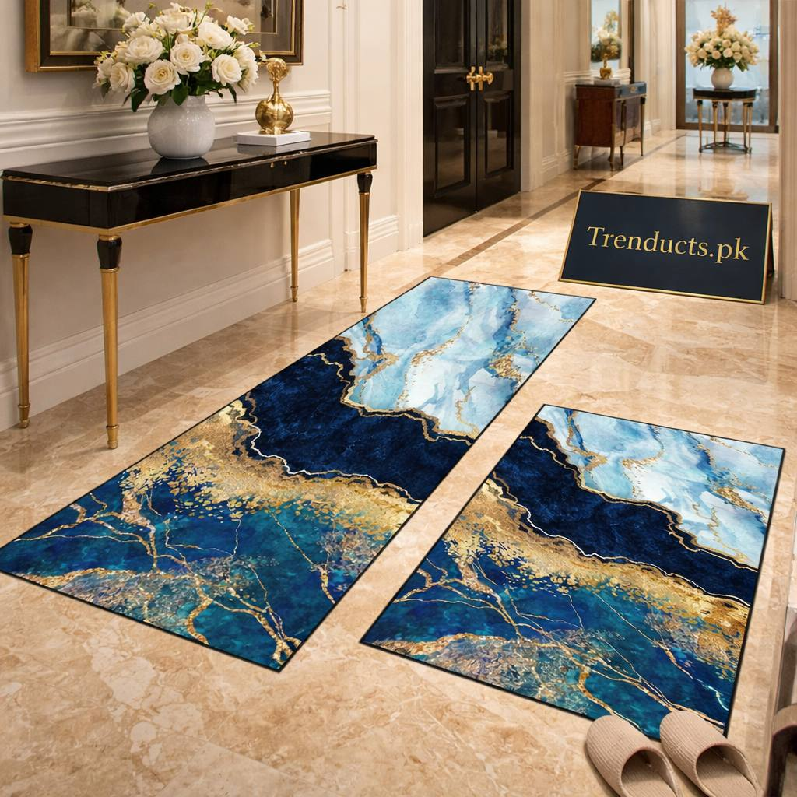
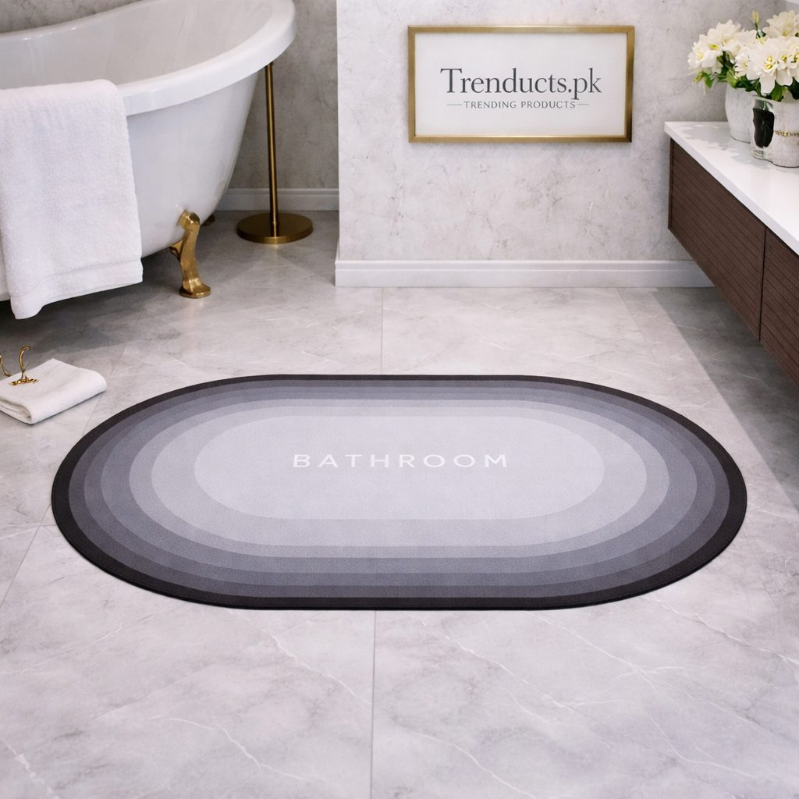

Many Pakistani homes, especially flats and newer houses in cities, have narrow passages connecting bedrooms, bathrooms and the kitchen. These hallways take constant traffic: children running, elders walking slowly at night, wet feet coming out of washrooms and dusty shoes coming in from outside. Marble and tile floors look elegant but become slippery when wet and show every speck of dust.
Runner rugs and quick-dry mats are a simple, affordable answer. They protect floors, reduce slipping, catch dust and make plain passages look finished. This guide explains how to choose and place them.
Why hallways and thresholds need attention
Slips are one of the most common causes of injury at home, particularly for elderly family members. The area just outside the washroom is the riskiest, because wet feet meet smooth tiles. In homes where wudu is performed several times a day, the floor near the washroom stays wet often. A good absorbent mat at this spot is a small investment in safety.
Choosing a runner for a narrow passage
Runners are long, narrow rugs designed for hallways. Measure the passage length and width. Leave about 10 to 15 cm of floor visible on each side; a runner that touches the walls makes the space feel cramped. For longer hallways, two matching runners with a small gap look neat. Marble-style printed runners suit modern homes with tile floors, while traditional patterns look warm in older homes.

Quick-dry mats for washroom doors
Outside the washroom, a regular cotton mat stays wet for hours and develops a smell, especially in humid Karachi. Quick-dry mats made of absorbent materials, sometimes called diatom or magic mats, soak up water in seconds and dry quickly. Look for an anti-slip rubber backing so the mat does not slide when stepped on. Square or rectangular mats in neutral colours fit most doorways. Many options are available on trenducts.pk, including runner sets and super-absorbent quick-dry mats.
Placement tips
Where you put mats matters:
- Just outside each washroom door, to catch wet feet
- At the main entrance, both outside and inside, to trap dust from shoes
- In the kitchen, in front of the sink and stove where spills happen
- Along the main hallway between bedrooms
- Near the wudu area if your home has a separate one
Safety first
Any rug can become a hazard if it slips or curls. Always choose anti-slip backing, or add a rug gripper underneath. Replace mats whose edges curl up, as they are easy to trip on. For elderly family members who walk at night, combine mats with a small night light in the hallway so they can see clearly.

Cleaning and care
Shake out runners weekly outdoors to remove dust. Vacuum if you have a vacuum cleaner. Wash according to the label; many runners and quick-dry mats can be wiped or hand-washed. Quick-dry mats should be wiped with a damp cloth and occasionally lightly sanded if absorption drops, depending on the type. Dry everything fully before putting it back.
Seasonal swaps
In winter, a thicker runner adds warmth to cold marble floors, which can be freezing in Islamabad and Peshawar. In summer and monsoon, lighter, quick-dry options are better. Rotating mats seasonally also extends their life.
Style on a budget
A matching set of runners and mats makes the home feel coordinated. Choose one colour family, such as grey, beige or blue, and use it throughout hallways and washroom doors. This simple step makes even plain passages look designed rather than forgotten.
Final thoughts
Runner rugs and quick-dry mats are small additions that make a big difference in Pakistani homes. They protect floors, catch dust and, most importantly, prevent slips outside washrooms. Measure carefully, choose anti-slip backings, place them where water and dust gather and clean them regularly. Your home will look neater and feel safer for everyone.